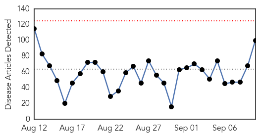
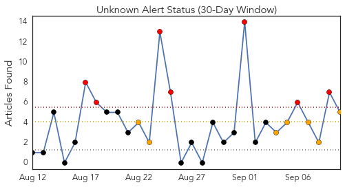
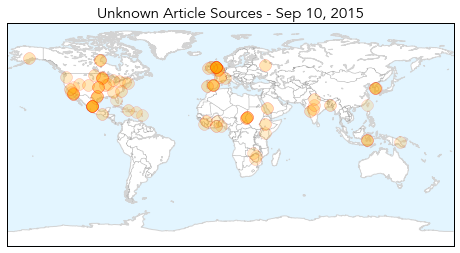
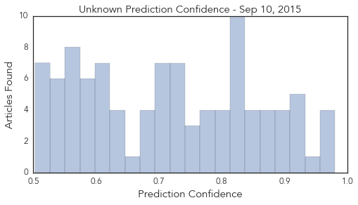

Ebola
30-Day Web Trend
0 alerts, 0 warnings

30-Day Twitter Trend
0 alerts, 0 warnings

Article Locations

Article Confidences

Top Articles:
- 1.000
- Cautious optimism as Ebola outbreak cases stay low
- 1.000
- Ebola Virus Disease — Sierra Leone and Guinea, August 2015
- 1.000
- Bend native helps contain ebola in West Africa; Amanda MacGurn one of hundreds deployed by CDC
- 0.999
- Ebola-hit African countries declare states of emergency
- 0.997
- Are Infectious Disease Outbreak Films Scientifically Accurate? The Truth About Hollywood's Depiction Of World Destruction
- 0.996
- New Ebola case identified in Sierra Leone
- 0.994
- Guinea passes one week with no new Ebola case: WHO
- 0.994
- Thanks Obama! Ebola down from 100 to 10 new cases a day in Liberia
- 0.994
- DOH assures Ebola Reston in PH 'kind' to humans
- 0.993
- Over 7,000 monkeys in 3 facilities monitored
- 0.992
- Ebola has traveled from Guinea to NY, but the city is ready
- 0.991
- Monkey ebola: Philippines suspends macaque exports
- 0.990
- Gov to invest more in disease control « Awoko Newspaper
- 0.987
- Magufuli threatens to give away idle sisal farms
- 0.987
- New cheaper, sensitive Ebola test to help curb disease spread
- 0.986
- Philippines bans monkey exports over Ebola deaths
- 0.984
- New nanozyme test can help curb Ebola spread in western Africa
- 0.983
- Ebola quarantines remain after outbreak fades, leaving travelers to negotiate web of rules
- 0.983
- Philippines suspends monkey exports after Ebola deaths
- 0.982
- New cheaper, sensitive Ebola test to help curb disease spread
- 0.969
- Sex and masturbation may hamper Ebola eradication efforts
- 0.968
- Isolated Flare-Ups of Ebola in West Africa Suggest Virus Might Be Transmissible In Semen For Much Longer Than Previously Believed
- 0.949
- How to Eradicate Political Panic
- 0.923
- Parasite treatment failure linked to virus
- 0.905
- Top medical adviser talks MERS, drug resistance-INSIDE Korea JoongAng Daily
- 0.856
- Ghana, Business Advice, Jobs, News, Business Directory, Real Estate, Finance, Forms, Auto
- 0.846
- NY Daily News: North Korea says it's discovered cure for cancer
- 0.821
- Belgian national airline increases flights to west Africa
- 0.781
- African scientists funded to seek cures for AIDS, Ebola at home
- 0.781
- Sierra Leone News: We must not lose focus on the ebola fight-CEO Palo Conteh « Awoko Newspaper
- 0.756
- Government restricts movement of monkeys for at least 3 years
- 0.746
- Frequently asked questions on migration and health
- 0.731
- Philippines suspends monkey exports after Ebola deaths
- 0.639
- IMF boss visits Liberia
- 0.631
- Government bans export of monkeys for four years
- 0.575
- 100,000 people die of snakebites each year
- 0.572
- More heartbreak for Ebola survivor after baby boy dies - Los Angeles Sentinel
- 0.571
- Seoul: Mission welcomes official delegation from Sierra Leone
- 0.524
- Sierra Leone: UNICEF Sierra Leone Ebola Situation Report, 2 September 2015
Top Tweets:
- 0.992
- UN health agency warns Ebola outbreak in West Africa has 'a very nasty sting ... - UN News Centre http://t.co/UTzv0g2IGQ ebola EVD
- 0.963
- Communication and Communicable Disease Control: Lessons From Ebola Virus Disease lessonslearned http://t.co/LrqvYZhSLm
- 0.921
- Super-sensitive Ebola test could curb disease spread - Times of India http://t.co/YX17do1SRZ ebola EVD
- 0.906
- DOH: 11 monkeys dead, 1 positive for Ebola - ABS CBN News http://t.co/a3SMKnxXtK ebola EVD
- 0.890
- Philippines suspends monkey exports after Ebola deaths - Yahoo News http://t.co/V0uqDz4do0 ebola EVD
- 0.890
- Philippines suspends monkey exports after Ebola deaths - Yahoo News http://t.co/KhRIjDIrtK ebola EVD
- 0.887
- warns Ebola outbreak in West Africa has ‘a very nasty sting in its tail’: http://t.co/48vA5J2sUe
- 0.883
- Danny Glover to star in movie about people who stopped Ebola from exploding in ... - U.S. News & W... http://t.co/pTtwtNMNEh ebola EVD
- 0.822
- Ebola's "magic pill" might actually be a machine - Fortune http://t.co/ovE1NP4jJf ebola EVD
- 0.802
- New nanozyme test can help curb Ebola spread in western Africa - http://t.co/A9wAAOLz1c http://t.co/NKLeyx7YaN ebola EVD
- 0.794
- We are Africa against Ebola https://t.co/ECn4jjuq3u
- 0.756
- Nigeria's Fight Against Ebola To Be Portrayed In A New Movie From Top ... - Okayafrica http://t.co/w845rcneJB ebola EVD
- 0.741
- IMF says it's committed to backing Liberia's recovery from Ebola - Fox News http://t.co/eEJRR0gjhw ebola EVD
- 0.719
- SierraLeone officials confirm 3 new cases of Ebola http://t.co/pb9wE4N6Rs SATY2015 Africaagainstebola
- 0.713
- Actor Danny Glover in Nigeria to star in movie about Ebola - Yahoo News UK http://t.co/pPZyBpVnTi ebola EVD
- 0.691
- County to consider Ebola preparation grant - Laurinburg Exchange http://t.co/Bo1LP52RE5 ebola EVD
- 0.667
- 10 Sept - news pouch on avianflu avianinfluenza Ebola EbolaResponse MERS is here: http://t.co/tYpEx1Dbjs
- 0.651
- RT: Carl Malan, Ebola trust executive secretary speaks about Ebola IamSA Dstv405 http://t.co/RxvfT3qabU
- 0.644
- Speaking with: Lawrence Gostin on Ebola, the WHO and the future of global health - The Conversation AU http://t.co/mQSazR9gnk ebola EVD
- 0.640
- 9 Sept - news pouch on avianflu avianinfluenza Ebola EbolaResponse MERS is here: http://t.co/tYpEx1Dbjs
- 0.639
- READ Young Nurse Adopts Newborn After Mother Dies From Ebola Infection http://t.co/s4J6Hy0cZU Africaagainstebola SATY2015
- 0.619
- Liberia SituationReport on Ebola, 2 September 2015 https://t.co/C2ThiZcMyn via
- 0.614
- Ebola and AIDS in Africa http://t.co/DsmQtskATX
- 0.612
- Circulating vaccine-derived poliovirus in Mali @Guinea Ebola http://t.co/DHRxKkgh4C
- 0.597
- Actor Danny Glover in Nigeria to Star in Movie About Ebola - ABC News http://t.co/0quHsPhm5n ebola EVD
- 0.581
- RT: Mungwari: Ebola is a 19710 disease, no one should die of it IamSA
- 0.560
- describes current strategies, resources needed for Ebola eradication in Sierra Leona & Guinea: http://t.co/hW2Z5upjjF
- 0.539
- Ebola goes global: The future of development, accountability, and media ... - Brookings Institutio... http://t.co/xj2yDCLxUJ ebola EVD
- 0.521
- SierraLeone Ebola SituationReport, 2 September 2015 https://t.co/Y9OtWz0oix via
Unknown
30-Day Web Trend
0 alerts, 0 warnings

30-Day Twitter Trend
7 alerts, 0 warnings

Article Locations
Article Confidences
Top Articles:
- 0.980
- PHE investigates outbreak of E.coli
- 0.979
- New study reveals breakthrough against Mers
- 0.969
- Napa County to begin offering free flu vaccines
- 0.965
- Second death linked to salmonella in cucumbers
- 0.939
- Childhood flu vaccination now available
- 0.922
- Second Death in Salmonella Outbreak in the US
- 0.914
- MERS victims file lawsuits against gov't, hospitals
- 0.912
- Second death linked to salmonella in cucumbers
- 0.910
- Legionnaires' death toll rises to 10 in western Illinois
- 0.910
- Second death reported in nationwide salmonella outbreak linked to cucumbers
- 0.906
- MERS victims file lawsuits against govt, hospitals – The Korea Times
- 0.903
- 'No new legionnaire's cases' in Greater Oporto
- 0.902
- Study shows popular molecular tests over diagnose C. difficile infections up to 50 percent
- 0.887
- Polio outbreak confirmed in Mali - WHO
- 0.882
- Minnesota Reports Outbreak of Salmonella Associated with Chipotle
- 0.873
- Salmonella-tainted cucumbers kill 2 people and sicken 339 others, CDC says
- 0.866
- PRESS DIGEST
- 0.866
- Outbreak of Salmonella cases associated with eating Chipotle in Minnesota - Story
- 0.857
- Ethiopia takes step to eliminate river blindness
- 0.850
- WHO calls for renewed efforts to eliminate tropical diseases in South East Asia
- 0.849
- 2nd Death Reported in Nationwide Salmonella Outbreak
- 0.846
- Chickens Genetically Modified to Resist Bird Flu
- 0.836
- More than 340 sickened in salmonella outbreak tied to cucumbers
- 0.834
- Nationwide salmonella outbreak linked to imported cucumbers
- 0.832
- Focus on neglected tropical diseases: WHO - World
- 0.831
- Alzheimer's may be a transmissible infection
- 0.829
- WHO focuses on neglected tropical diseases
- 0.829
- Second death in widespread salmonella outbreak reported in Texas
- 0.825
- Deadly ambush on humanitarian workers in Darfur
- 0.825
- Chiang Rai’s Public Health Office Works to Contain (HFMD) in Local Schools
- 0.824
- Two People Dead as Cucumber Salmonella Outbreak Worsens
- 0.824
- Two dead, 70 hospitalized in multi-state salmonella outbreak linked to cucumbers
- 0.805
- Salmonella cases linked to national outbreak
- 0.804
- TB vaccine may only be given to ‘at-risk’ children
- 0.799
- Countries urged to commit to eliminating tropical diseases
- 0.794
- Minnesota salmonella outbreak linked to Chipotle restaurants
- 0.789
- Rabies shots come with sticker shock
- 0.788
- 'Seeds' of Alzheimer's 'might be transferred on medical instruments'
- 0.767
- WHO calls for focus on neglected tropical diseases
- 0.767
- Legionnaires' disease outbreak at Veteran's Home doesn't keep vo
- 0.765
- Is Alzheimer's Disease Contagious? New Evidence Suggests It Could Be Transferred On Medical Instruments
- 0.747
- 'Seeds' of Alzheimer's might be transferred on medical instruments
- 0.746
- Alzheimer’s Disease Could Potentially Be Spread Through Surgery « CBS Atlanta
- 0.740
- Salmonella cases linked to national outbreak
- 0.739
- 2 dead, hundreds sick in cucumber-linked salmonella outbreak that reached Kansas
- 0.736
- 'Seeds' of Alzheimer's 'might be transferred on medical instruments'
- 0.735
- One Texas death linked to cucumber salmonella outbreak
- 0.734
- Second Death Confirmed from Tainted Cucumbers in Salmonella Outbreak Across 30 States; 341 Illnesses Thus Far
- 0.733
- Alzheimer's 'seeds' might be transferred
- 0.729
- The Caledonian-Record
Showing top 50 articles...
Top Tweets:
- 0.958
- RT: FLU SCAN: UK flu vaccine effectiveness, flu vaccine uptake and flu in elderly http://t.co/uWGhAC1KOT
- 0.553
- RT: Chicas, si van a poner foto de las tetas traten de que no les salga la papada.
- 0.526
- RT: 🌞🌸🍃🌸🍃🌸🍃🌸🍃🌸🍃🌸🌞 BuenDía Un alma buena, habita en un corazón feliz... FelizJueves…
- 0.511
- RT: FelizJueves en nombre de Dios todo saldrá bien .....Amen
- 0.500
- RT: UnDiaComoHoy hace 11 años, se descubre la verdadera identidad de la Mona Lisa, esposa de Francesco de Giocondo, Lissa de Gia…